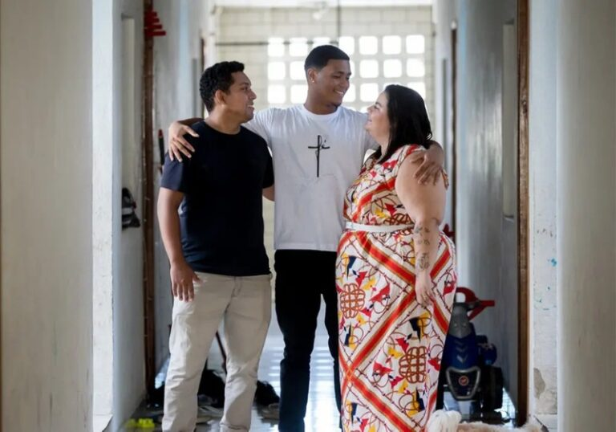

A notícia boa do casal que adota um jovem de 17 anos, no Ceará, fala muito sobre amor sem preconceito.
26 de maio de 2026

A notícia boa do casal que adota um jovem de 17 anos, no Ceará, fala muito sobre amor sem preconceito. O João já tinha aprendido a não criar expectativas. Depois de passar praticamente a vida inteira em acolhimento, o adolescente acreditava que ninguém mais o escolheria para ser filho. Até que Vanessa Pinheiro e Talvany Pinheiro apareceram, e mudaram tudo.
O encontro aconteceu em Fortaleza, no Ceará, durante uma visita voluntária a uma instituição. No meio daquela quadra esportiva cheia de adolescentes, Vanessa viu o marido brincando com João e sentiu algo difícil de explicar.
“Parecia familiar.” Foi assim que ela descreveu o momento em que percebeu que aquele garoto fazia parte da família que sempre sonhou construir.
O casal está junto há 12 anos e sempre quis adotar. Mesmo podendo ter filhos biológicos, Vanessa conta que o desejo de acolher alguém existia desde muito nova.
Quando entraram no Sistema Nacional de Adoção e Acolhimento, em 2024, os dois buscavam uma criança pequena. Mas a vida tinha outros planos reservados para eles.
João chegou ao acolhimento ainda bebê. O tempo foi passando, aniversários foram chegando e, aos poucos, a esperança de ganhar uma família começou a desaparecer.
Isso porque a adoção tardia ainda enfrenta muito preconceito no Brasil. Enquanto muitos procuram bebês, adolescentes acabam crescendo sem nunca ouvir alguém chamá-los de filho.
Mas Vanessa e Talvany decidiram olhar além da idade. Depois daquele primeiro encontro, não conseguiram mais esquecer João.
O adolescente passou a ocupar um espaço no coração dos dois antes mesmo da adoção acontecer.
Quando recebeu a notícia de que seria adotado, João ficou sem reação. Segundo Vanessa, ele achava que aquilo jamais aconteceria com ele.
Acostumado à falta de afeto, o rapaz foi aprendendo como era ser cuidado de verdade.
E a aproximação foi acontecendo devagar, cheia de cuidado, carinho e paciência.
Um dos momentos mais emocionantes da nova família aconteceu durante uma madrugada. João estava doente, e Vanessa foi verificar a febre dele enquanto o adolescente dormia.
“Mãe, eu estou bem. Pode dormir”, disse o garoto quase sem perceber.
Naquele instante, Vanessa ouviu pela primeira vez um “mãe” cheio de amor, e nunca mais esqueceu aquele momento.
Hoje, João finalmente tem um lar, colo, cuidado e pessoas para chamar de família.
E Vanessa e Talvany têm a certeza de que aquele encontro na quadra não foi coincidência: “Era para ser ele”, disse Vanessa ao Diário do Nordeste.